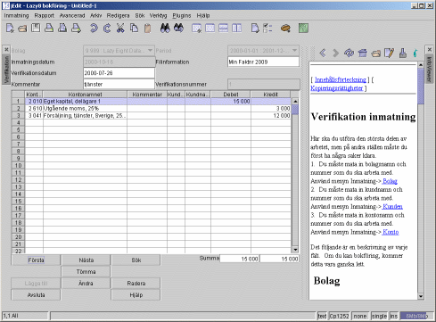

|
|
Normalt kommer du att använda detta inmatningsformulär till 90% av din tid med Lazy8 bokföring. Jag kommer först att beskriva snabbinmatningstekniken och sedan kommer en nogran förklaring av varje fält på formulären.

Snabbinmatningstekniken
När du kommer till detta fönster för första gången kan det hända att du inte kan se alla kollumner. Några kollumnar har flyttats till höger och är då gömda för fönstret. För att kunna se alla kollumner måste du minska storleken på kollumnerna. För att minska eller förstora kollumnerna, måste du sätta musmarkören mellan två kollumnhuvuden. Du kommer då att märka att markören ändras. Tryck på den vänstra musknappen och dra den för att förstora eller förminska kollumnen. När alla kollumnerna syns, fortsätter du med uppgiften.
1. Sätt markören i verifikationsdatumfältet. Efter denna punkt behöver du inte använda musen.
2. Mata in verifikationsdatumet. Om du matar in datumet i fel format kommer datorn att visa ett felmeddelande. Slå 'ENTER' på tangentbordet.
3. Nu är markören i Kommentarfältet. Mata in en kommentar som ska hjälpa dig att känna igen denna verifikation. Slå 'ENTER' på tangentbordet.
4. Nu är markören i det första kontonummerfältet. Mata in ett kontonummer. Slå 'ENTER' på tangentbordet.
5. Nu är markören i debetfältet. Mata i en debetsiffra eller tryck på 'tab' och mata i en kreditsiffra. Slå 'ENTER' på tangentbordet. Slå 'ENTER' på tangentbordet.
6. Nu är markören i kontonummerfältet igen. Mata in ett kontonummer. Slå 'ENTER' på tangentbordet.
7. Nu är markören i debetfältet igen. Nu kan du mata i en debetsiffra eller bara slå enter och en debet eller kreditsiffra ska automatiskt komma upp i fältet för att balansera verifikationen.
8. Du har du ytterligare en gång kommit till kontonummerfältet. Du får mata i ett kontonummer eller om verifikationen är balanserad kan du bara slå 'ENTER' på tangentbordet. Då kommer markören att placeras på 'Lägg till' knappen. Slå 'ENTER' på tangentbordet. Du får meddelandet att allt gick bra eller dåligt. Om det gick bra, slå 'ENTER' på tangentbordet igen. Nu är markören i verifikationsdatumfältet igen. Börja om på punkt nummer 2.
Definition av varje fält
Jag hoppade över en massa fält i beskrivningen för snabbinmatningen. Här får du veta vad alla fält har för innebörd.Bolag
Normalt väljer du vilket bolag du ska arbeta med när du starta Lazy8 bokföring. Detta företag visas här. För att byta bolag, måste du starta om Lazy8 bokföring.Bokföringsperiod
Verifikationsdatumet måste hamna mellan dessa två datum, annars, godkänns det inte. För att byta bokföringsperiod, måste du starta om Lazy8 bokföring.Inmatningsdatum
Detta är dagens datum, dvs. det datum du matade in informationen. Detta fält är oåtkomligt därför att det ska fyllas i automatiskt.
Verifikationsdatum
Detta är datumet på verifikationen som du nu matar i information om. Detta datum måste du ange annars kommer den att fyllas i med dagens datum. Det finns ett specifikt format för datumet som ditt operativsystem (Windows, Linux) har bestämt. Om du ger fel format kommer programet att visa dig vad som är rätt.
Kommentar
Detta är viktig information som du måste ange. Detta fält visar sig i nästan alla rapporter. Detta är en beskrivning av vad fakturan handlar om, eller vad det var du köpte eller sålde eller något annat viktig.
Filinformation
Detta fält visar sig på få rapporter så det är mindre viktigt. Men enligt lagen måste du ha ett starkt band mellan bokföringen och den aktuella verifikationen. Detta är vad detta fält används till. Mata här in verifikationsnummer eller var du lägger verifikationen.
Kunden
Denna information anges helt frivilligt. Det är bara till för om du vill kunna generera statistik om dina kunder och hur många affärer du gör med dem. Om din kund inte finns här måste du först ange kunden med menyn Inmatning-> Kunden
Verifikationsnummer
Du kan ej mata in detta nummer. Det ifylls automatiskt. Det är ett unikt nummer som identifierar denna händelse. Normalt måste du enligt lagen skriva detta nummer på verifikationen. Den ifylls direkt efter att du har tryckt på Lägga till.
Debet
I denna kollumn ska du mata in alla debet transaktioner.
Konto
Välj här vilket konto du ska debitera eller kreditera. Om kontot inte finns här måste du välj menyn Inmatning-> Konto och mata in kontot först.
Debit Konto Summa
Mata in summan för denna debitering.
Summa
Detta fält ifylls automatiskt för att visa dig vad summan är på alla debiteringar. Detta fält måste vara lika med det likartade fältet under Kredit annars accepterar ej programmet inmatningen.
Kredit
I denna kollumn ska du mata in alla kredit transaktioner.
Kredit konto summa
Mata i summan för denna kreditering.
Kredit konto slutsumma
Detta fält ifylls automatiskt för att visa dig vad summan är på alla krediteringar. Detta fält måste vara lika med det likartade fältet under debet annars accepterar inte programmet inmatningen.
|
|
Copyright 2002 Lazy Eight Data HB